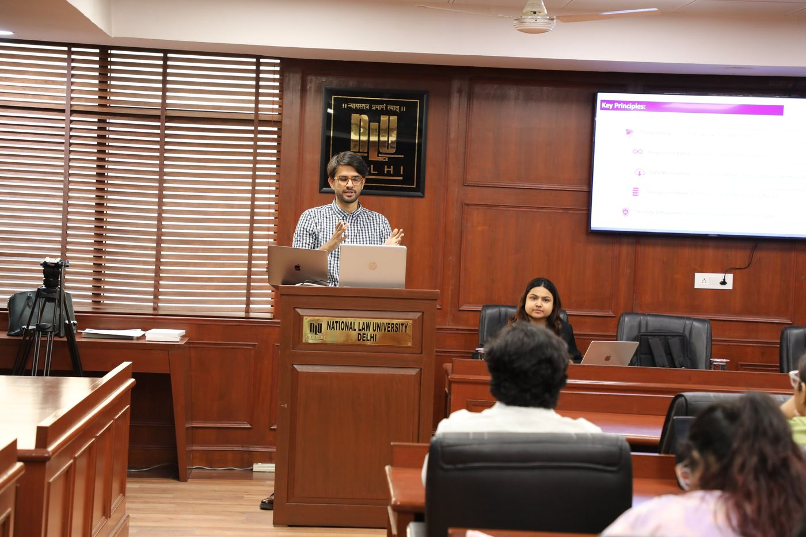
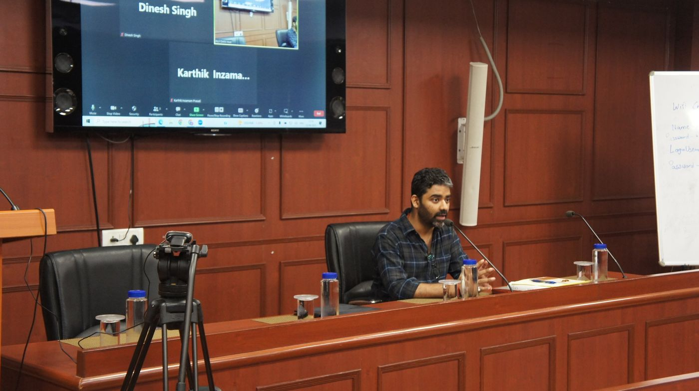

Fear and Freedom of Speech
Prof. Anup Surendranath and Sanjoy Roy joined Soch for a frank conversation on fear, censorship, public expression and the everyday practice of free speech.

Conversations
Lectures, panels and workshops that bring scholars, lawyers, activists, policymakers and students into serious conversation.
Archive
Prof. Anup Surendranath and Sanjoy Roy joined Soch for a frank conversation on fear, censorship, public expression and the everyday practice of free speech.
A session with Ikigai Law unpacking India's newly minted Digital Personal Data Protection Act — from everyday consent clicks to bigger questions of digital public infrastructure. Preceded by an online discussion with founder Anirudh Rastogi on careers in law.

A consultation with legal experts, policymakers, academicians, advocates and sex workers toward a practical legal resource handbook.

A lecture exploring the values embedded in technological governance, emerging regulation and individual rights.

A conversation on urban governance, infrastructure gaps and the promise of Indian cities, co-hosted with CLUD.

A wide-ranging conversation on political economy, agriculture, farmers rights and India’s growth story.